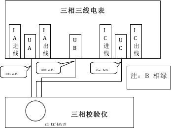
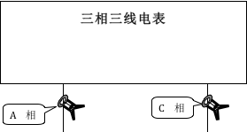

一、仪器取三相三线电表的电压、电流信号
仪器取电压信号（如下方图3所示）。
- 把本公司所配的电压线（黄、绿、红、黑各一根）的插头端插在仪器的电压端，按颜色插入。
- 把本公司所配的电压线的夹子端（黄、黑、红，注意：绿色夹子不用）分别接在电表的A、B、C相电压。也即把电表的B相电压接入到校验仪的电压零相端。

图3：三相三线电表电压接法示意图

图4： 三相三线电表电流接法示意图
把A、C两支5A电流钳一端插在仪器上，钳表分别夹在电表的A、C的电流出线上，注意电流方向，电流从钳表的极性端一侧输入，从钳表的编号的一侧输出。